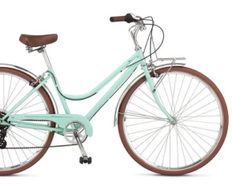

Данный велосипед с колесами 26 дюймов хорошо подходит высоким подросткам. Прогиб рамы и небольшой
размер
рамы
расчитан на рост от 135 до 165 см.
Суммарный вес велосипеда был снижен до 16,9 кг, так как рама была изготовлена с учетом использования
велосипеда подростками.
Характеристики
Двойной обод
Алюминиевый сплав
Колеса диаметром 26 дюймов
Покрышки 26х1,95"

Велосипед SCHWINN Traveler women 2022
Женский велосипед со стальной рамой Classic step-true lightweight позволяет девушкам без проблем его перемещать.
На данном велосипеде имеется 7 скоростей с переключателями от Shimano, а жесткая вилка обеспечивает отличную управляемость. Подходит для катания по асфальтированным поверхностям.